2022–2024
Assinatura flexível
do MVP até a comprovação da proposta de valor
Resumo
- Contexto
-
A Turbi aluga carros sob demanda, por horas e dias, desde 2017.
Em 2022, uma dor latente para a escalabilidade do negócio era a falta de previsibilidade de receita e a necessidade de uma ocupação que zerava todo mês.
- O que fizemos
- Criamos um produto de assinatura de forma progressiva, validando uma frente completamente nova, mapeando as lacunas do mercado e posicionando o produto com um diferencial claro e a proposta de valor definida.
- Resultado
- Hoje a assinatura sustenta a maior parte da utilização da frota, com milhares de contratos ativos.
O mercado vendia assinatura com consultores, contratos engessados e o carro escolhido por categoria com meses de antecedência. A Turbi tinha o oposto disso no DNA: contratação sozinha pelo app, carro específico e nenhum balcão.
Para o negócio, a aposta era previsibilidade de receita e melhor utilização da frota durante a semana. Para o cliente, ter um carro para chamar de seu sem a burocracia de ser dono de um. O desafio era o time to market correndo contra a descoberta completa, para um público novo e com outra motivação de uso.
Ter um carro novo, simples e imediato, sem a burocracia de comprar ou alugar, com a segurança de não ficar na mão.
Com o entendimento da necessidade do negócio para lançar o produto, conseguimos validar e escalar a demanda do produto em menos de um ano.
O que foi feito
mai 2022
Landing page para validação da demanda
Uma página vendendo nosso aluguel de 30 dias como um novo formato de uso do carro, para medir demanda sem produto.
nov 2022
Assinatura como upgrade da reserva
Agora no app, quem estava reservando um carro por mais de 15 dias recebia a oferta de assinar. Vender dentro de um fluxo que já existia foi o jeito mais barato de testar preço e período.
jan 2023
Primeira versão da adesão por fluxo próprio
A assinatura deixou de depender de uma reserva e virou porta de entrada própria. Foi quando o produto passou a ter base para analisar.
fev–abr 2023
Trabalho de mapeamento e produtização
Análise da base de assinantes, contato com assinantes e leads, pesquisa quantitativa, estudo de uso de quilometragem e benchmark. Daí saíram as regras, o fluxo, o protótipo e o teste de usabilidade.
mai 2023
V1 estruturada no ar
Período de 1 a 12 meses com desconto progressivo, escolha do carro específico, cobrança recorrente, renovação e upgrade dentro do contrato.
jun–ago 2023
V2 estruturada: franquias e condutor adicional
As faixas de franquia acumulativa entraram junto com condutor adicional sem custo, além do aviso de km excedente.
2023–2024
Ciclos de melhoria contínua
Revisão de fluxo e de copy, evolução a partir do mapeamento da jornada e dúvidas sendo sanadas dentro do produto em vez de no atendimento.
O atendimento precisava ser mais humano do que a gente imaginava
A proposta de valor da Turbi é o autoatendimento, mas o discovery mostrou que o cliente precisava falar com alguém nesse fluxo, por conta do ticket médio e do contrato mais longo.
Entregar o carro rápido era o nosso maior diferencial
Nenhum concorrente entregava em menos de 7 dias, e nos casos de montadora a espera chegava a 60. Retirar o carro na hora foi a vantagem mais citada na pesquisa com a base.
O carro não ser zero era o desafio a superar
Assinatura de carro era sinônimo de carro zero, e a nossa frota podia já ter rodado antes. Superar isso passou por transparência, com a ficha completa do carro visível antes de assinar.
As decisões de produto
De 1 a 12 meses, com desconto progressivo
Não existia até então: as assinaturas de mercado começavam em 12 meses.
Franquia de km acumulativa
O que não roda em um mês fica para o mês seguinte dentro do contrato.
Renovação automática gerenciável no app
O cliente vê quando o contrato termina e decide renovar ou encerrar sem falar com ninguém.
Upgrade durante a assinatura
De período, categoria ou franquia, sem precisar encerrar o contrato e assinar de novo.
Condutor adicional sem custo
Até 5 pessoas dirigem o mesmo carro sem custo adicional.
Sem caução e sem combustível incluso trade-off
Nenhum concorrente tirava a caução, e mantê-la poderia travar a conversão. O combustível ficou de fora de propósito.
Alguns materiais de estudo
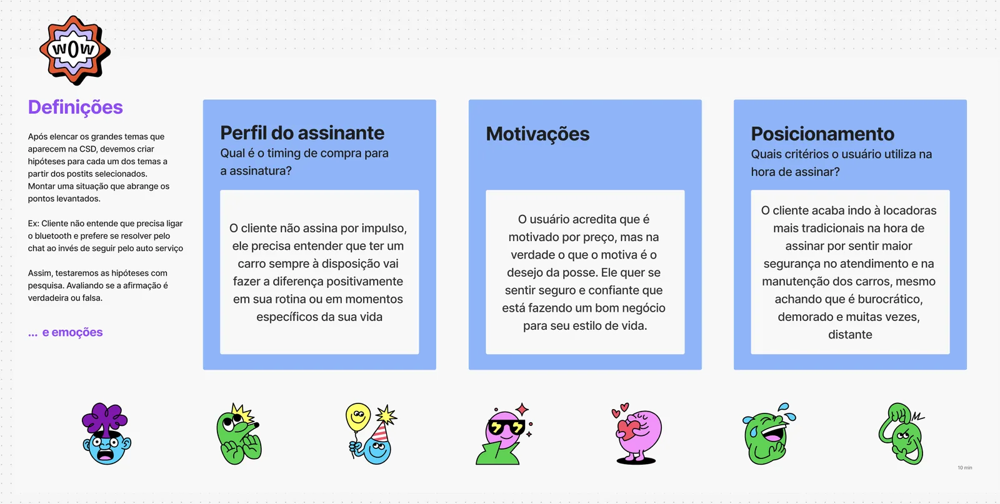
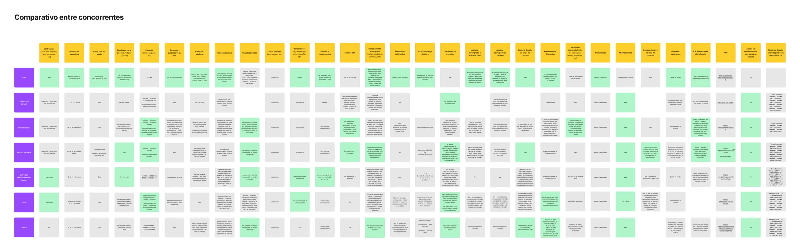
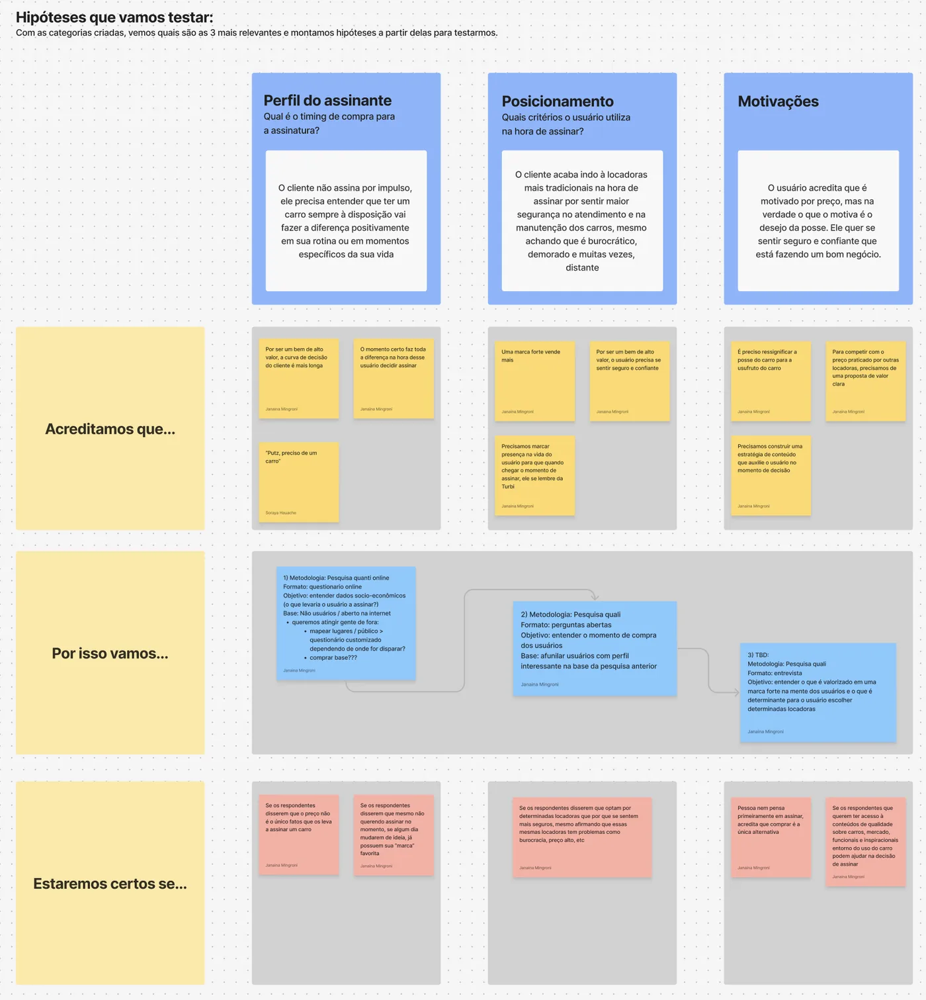
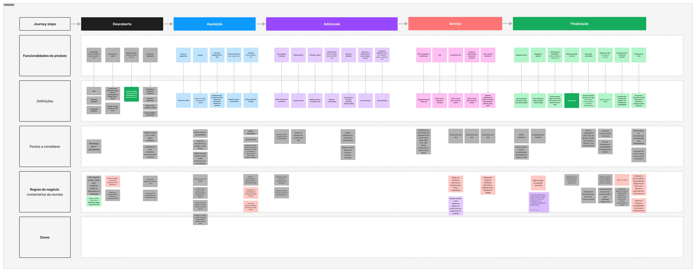
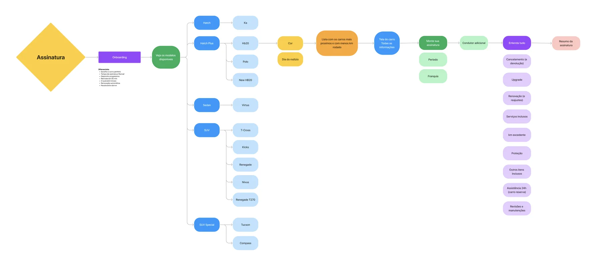
A primeira versão estruturada no app
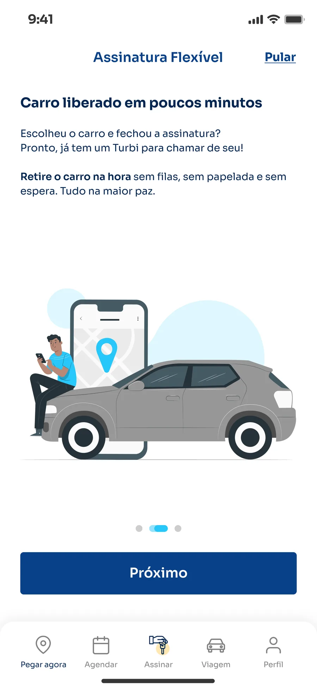
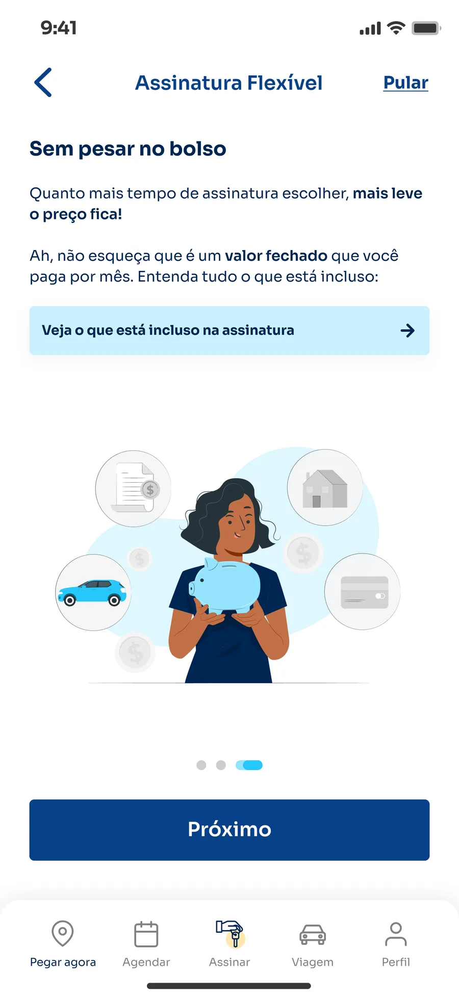
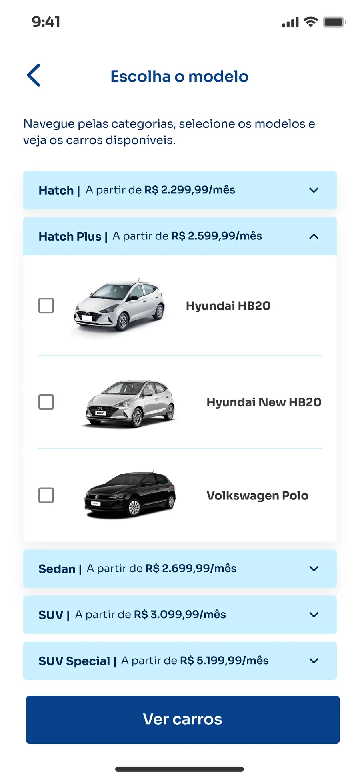
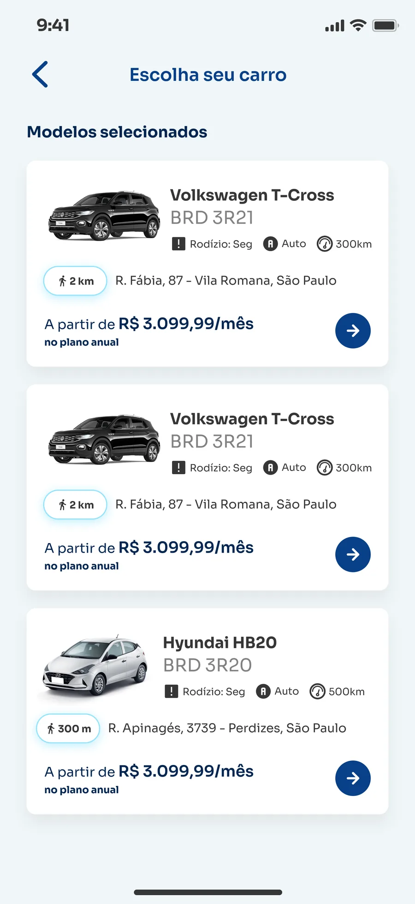
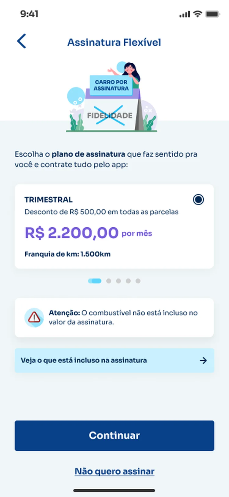
O que veio depois
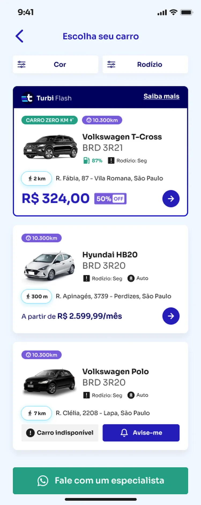
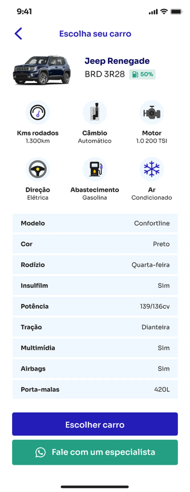
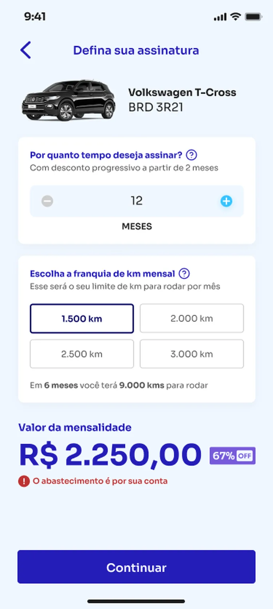
+40%
de crescimento nas assinaturas, da primeira versão de teste à versão consolidada
Milhares
de contratos ativos hoje, num produto que começou como uma landing page
1 a 12
meses de período contratável, quando a assinatura de mercado começava em 12
A dor de 2022 era previsibilidade de receita e uma ocupação que zerava todo mês. Hoje a assinatura é o produto que sustenta a maior parte da utilização da frota e dá essa previsibilidade para o negócio.
Gostou desse case? Bora conversar! :)